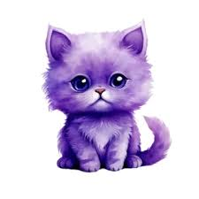

HERE COMES MY FAVORITE PART

Our meeting may have been unexpected, but I’m truly thankful it happened. From the moment we first interacted, you brought happiness into my days, and every moment we’ve spent together is something I will always treasure. You’ve given me memories I will never forget, and for that, I will always be grateful.
SCROLL DOWN
SCROLL DOWN
SCROLL DOWN
SCROLL DOWN
SCROLL DOWN



I just saw your story on your Facebook account last December 27, 2025. The content was, “Stay single until someone sends you a full essay of why they want a relationship with you.” Honestly, I don’t know how to react or how to start this message, but I’ll just say what my feelings tell me. Jea, I want you to know that I want to be in a relationship with you, but I truly value the presence of courtship. I’m not desperate to rush into a relationship; I just want us to enjoy what we have for now and cherish the moments we spend together. I want to be in a relationship with you because you are the only one who made me feel appreciated, even though you were selling to me at the time, and you’re also the only one who didn’t treat me like a total stranger during our first meeting and first conversation. The most unexpected part was the moment I fell for you—it was so strange, like nabigla na lang ako na may nabubuo na palang feelings. Love really moves in unexpected ways, and I think that was the plot twist I had been waiting for. The moments we talk, especially the voice messages you send, make my heart feel light and soft, and hearing your voice always makes my day. I may have only seen you once, but my feelings for you are just—wahhh, I’m so in love. It was so unexpected, yet every time I think about it, my heart feels this strange warmth, and I know it’s because I’m in love with you.And if someday the moon calls your name, don’t be surprised—it’s because I’ve always told it about you. Rushing things is not in my vocabulary -if you were to give me a chance to court you i would take it, courtship is something that i value the most because this was the part that i will prove myself to you. I really really like you, I'm willing to wait until you’re ready.
Jea, I will ask you one more thing. Can I court you Jea Agripa??